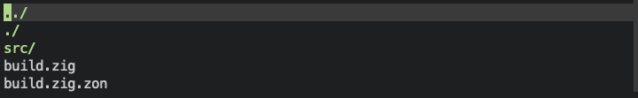

This will go over the basic format behind zig's build system and how to get a project started. If you already have an understanding of this, I would recommend going straight to the next chapter Here
Zig has many amazing ergonomic features that allow for getting started fast. The compiler has some amaing features that allow us to get going quick. Let get started by initializing a new project in zig. This can be done from the command line. After we make a new folder that we want to work in. We can then use this command.
mkdir zRogue-game
cd zRogue-game
zig init
With these commands zig with generate a new file. There are several important ones that we will go over. Lets look at each of them
First a source directory is made. There should be two files located in it: main.zig & root.zig. The main file is our primary entry point into the program. The root file is used as an example for building a library which we will see in the build.zig file.
The next item will be the build.zig file. This is a file that allows you to write the build instructions in zig. This is one of zig's super powers in my opinion. It provides powerful ways to instruct how things should be built conditionally. Lets take a look at what comes in this file!
const std = @import("std");
pub fn build(b: *std.Build) void {
const target = b.standardTargetOptions(.{});
const optimize = b.standardOptimizeOption(.{});
const lib = b.addStaticLibrary(.{
.name = "zRogue-game",
.root_source_file = b.path("src/root.zig"),
.target = target,
.optimize = optimize,
});
b.installArtifact(lib);
const exe = b.addExecutable(.{
.name = "zRogue-game",
.root_source_file = b.path("src/main.zig"),
.target = target,
.optimize = optimize,
});
b.installArtifact(exe);
const run_cmd = b.addRunArtifact(exe);
run_cmd.step.dependOn(b.getInstallStep());
if (b.args) |args| {
run_cmd.addArgs(args);
}
const run_step = b.step("run", "Run the app");
run_step.dependOn(&run_cmd.step);
const lib_unit_tests = b.addTest(.{
.root_source_file = b.path("src/root.zig"),
.target = target,
.optimize = optimize,
});
const run_lib_unit_tests = b.addRunArtifact(lib_unit_tests);
const exe_unit_tests = b.addTest(.{
.root_source_file = b.path("src/main.zig"),
.target = target,
.optimize = optimize,
});
const run_exe_unit_tests = b.addRunArtifact(exe_unit_tests);
const test_step = b.step("test", "Run unit tests");
test_step.dependOn(&run_lib_unit_tests.step);
test_step.dependOn(&run_exe_unit_tests.step);
}
I've taken out the comments from this, but I would invite you to read through all the comments provided by default to get an understanding of what it each part does. As a high level overview:
const std = @import("std");
First we import the standard library. This is where all of our fun functions that we use to build the program are located.
pub fn build(b: *std.Build) void {
We then define a function that will be called from the cli.
After running the code above we should have a window open with the title that we gave it. How exciting! Step one is all done. The next thing we need to do is to get something rendering on that screen. Thankfully zRogue does much of the heavy lifting for us.